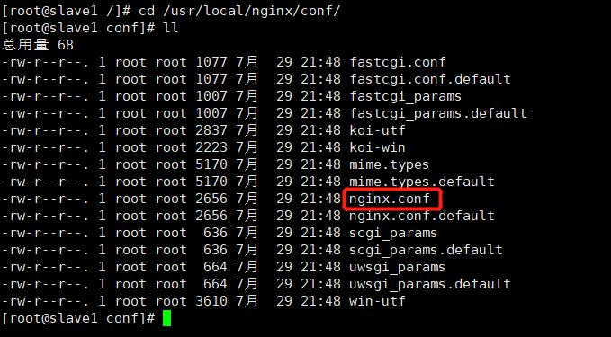

nginx 安装在 /usr/local/nginx 目录下(假定)，其默认的配置文件都放在这个目录的 conf 目录下，而主配置文件 nginx.conf 也在其中，后续对 nginx 的使用基本上都是对此配置文件进行相应的修改，所以本篇博客我们先大致介绍一下该配置文件的结构

nginx.conf 的主体结构
|
|
去掉注释内容，精简之后的内容如下：
根据上述文件，我们可以很明显的将 nginx.conf 配置文件分为三部分
全局块
从配置文件开始到 events 块之间的内容，主要会设置一些影响nginx 服务器整体运行的配置指令，主要包括配置运行 Nginx 服务器的用户（组）、允许生成的 worker process 数，进程 PID 存放路径、日志存放路径和类型以及配置文件的引入等。
比如上面第一行配置的：
这是 Nginx 服务器并发处理服务的关键配置，worker_processes 值越大，可以支持的并发处理量也越多，但是会受到硬件、软件等设备的制约，这个后面会详细介绍。
events 块
比如上面的配置：
events 块涉及的指令主要影响 Nginx 服务器与用户的网络连接，常用的设置包括是否开启对多 work process 下的网络连接进行序列化，是否允许同时接收多个网络连接，选取哪种事件驱动模型来处理连接请求，每个 word process 可以同时支持的最大连接数等。
上述例子就表示每个 work process 支持的最大连接数为 1024.
这部分的配置对 Nginx 的性能影响较大，在实际中应该灵活配置。
http 块
|
|
这算是 Nginx 服务器配置中最频繁的部分，代理、缓存和日志定义等绝大多数功能和第三方模块的配置都在这里。
需要注意的是：http 块也可以包括 http全局块、server 块
1.http 全局块
http全局块配置的指令包括文件引入、MIME-TYPE 定义、日志自定义、连接超时时间、单链接请求数上限等。
2.server 块
这块和虚拟主机有密切关系，虚拟主机从用户角度看，和一台独立的硬件主机是完全一样的，该技术的产生是为了节省互联网服务器硬件成本。后面会详细介绍虚拟主机的概念。
每个 http 块可以包括多个 server 块，而每个 server 块就相当于一个虚拟主机。
而每个 server 块也分为全局 server 块，以及可以同时包含多个 locaton 块。
- 全局 server 块 最常见的配置是本虚拟机主机的监听配置和本虚拟主机的名称或IP配置。
- location 块 一个 server 块可以配置多个 location 块。
这块的主要作用是基于 Nginx 服务器接收到的请求字符串（例如 server_name/uri-string），对虚拟主机名称（也可以是IP别名）之外的字符串（例如 前面的 /uri-string）进行匹配，对特定的请求进行处理。地址定向、数据缓存和应答控制等功能，还有许多第三方模块的配置也在这里进行。